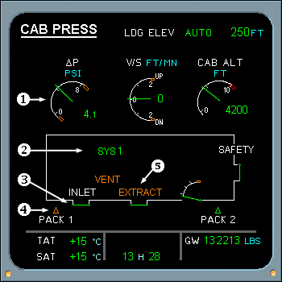

Pneumatic System Displays
Cab Press SD
1. CABIN DIFFERENTIAL PRESSURE - Displays green when in normal range. Displays amber when out of normal range (normal range is between -0.4 PSI and 8.5 PSI). Pulses green if differential pressure exceeds 1.5 PSI during landing and stops pulsing when less than 1 PSI.
2. ACTIVE SYSTEM INDICATION - SYS 1 or SYS 2 displays green when active and becomes amber when a fault is detected. MAN displays green when the MODE SEL switch is at MAN.
3. INLET/EXTRACT VALVE POSITION - Displays green for normal operations. Displays amber if disagreement.
4. PACK INDICATION - Displays green when associated pack flow control valve is open and amber if pack flow control valve is closed and the associated engine is running.
|  |
5. INLET/EXTRACT INDICATIONS - Displays white. Changes to amber when blower or extract fault detected.